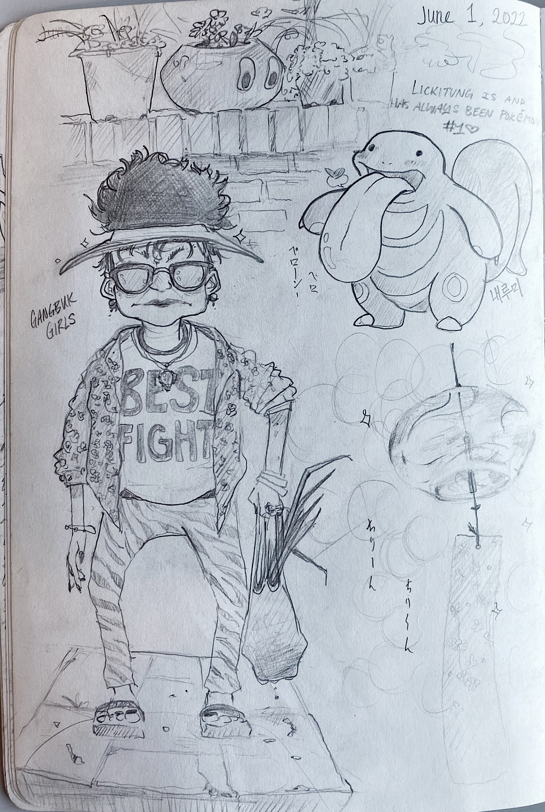

i posted to instagram asking people for ideas and requests for things to draw! this resulted in:
a sexy mermaid;
a lizard doing laundry;
curious george;
a crane in a patch of flowers;
my older sister Lyric's two beautiful daughters (crying, but still looking very cute hehe);
a hamster with a flower growing from its head;
and a sketch of a photo from my own instagram feed that i like (from a trip to Chikubushima, an island in the middle of Lake Biwa)